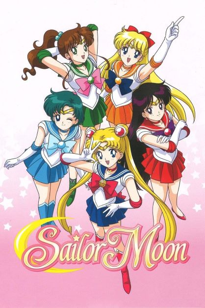

Information Technology and Management student exploring careers in cybersecurity and information technology. Natural team player. Goal-oriented.
Welcome to my profile! My name is Nidia Guadarrama. I am a freshman in Information Technology and Management. I am interested in encouraging more people to use technology to help them in their everyday lives. I hope to accomplish this by protecting user data in order to promote safe application usage.
Outside of work, I enjoy reading and listening to music to relax. I am currently seeking part-time positions to contribute to honing my communication skills and problem-solving abilities as well as to gain work experience.
I like a lot of songs from Three Days Grace so it was really difficult to choose a favorite song. I definitely reccomend checking out some of their songs, they will not dissapoint!
The first time I watched sailor moon was when I was around five. It's a pretty long anime if you watch the original version, but the new version is much shorter because it actually follows the storyline of the manga.
